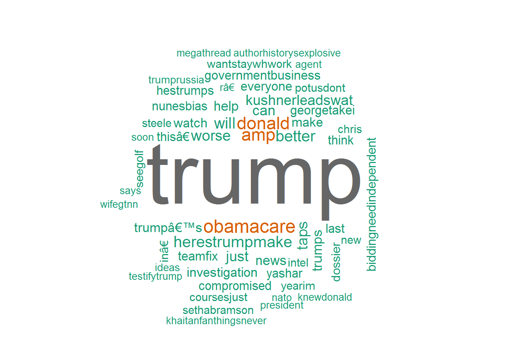
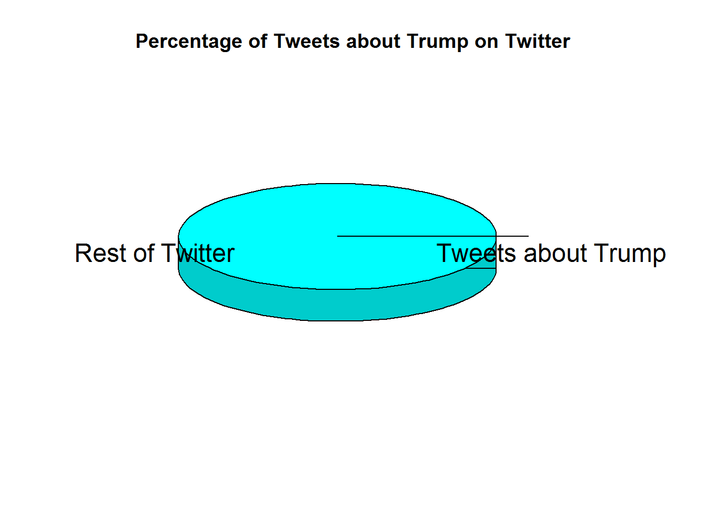

I will eventually write an abstract.
## Warning: package 'tm' was built under R version 3.3.3## Warning: package 'wordcloud' was built under R version 3.3.3
# NEXT LINE TELLS HOW MANY PEOPLE ARE TWEETING ABOUT TRUMP
tweets_trump=searchTwitter(search_term)
result <- length(tweets_trump)
poptwitter <- 500000000-result
# NEXT LINE TURNS IT INTO A 3D PIE CHART
library(plotrix)
slices <- c(result, poptwitter)
lbls <- c("Tweets about Trump", "Rest of Twitter")
pie3D(slices,labels=lbls,explode=0.1,
main="Percentage of Tweets about Trump on Twitter")
library(twitteR)
userTimeline("donaldtrump", n=3200, maxID=NULL, sinceID=NULL, includeRts=TRUE)## [[1]]
## [1] "DonaldTrump: To follow Donald J. Trump visit @realDonaldTrump."mentions(n=3200, maxID=NULL, sinceID=NULL)## Warning in statusBase(cmd, params, n, 800, ...): statuses/mentions_timeline
## has a cap of 800 statuses, clipping## [[1]]
## [1] "_jennapaul: I can't concentrate on anything cause I'm too excited to see my best friend who I haven't see since summer<ed><U+00A0><U+00BD><ed><U+00B8><U+00A9><ed><U+00A0><U+00BD><ed><U+00B8><U+00B1> @JenSchaff95"
##
## [[2]]
## [1] "sonialedwith: So thankful for the littlest @JenSchaff95 every day, especially today because she brought me food in the lib #bae #sdtuesday"
##
## [[3]]
## [1] "hannahfriedz: @JenSchaff95 little can u like follow me back plz"
##
## [[4]]
## [1] "_jennapaul: @JenSchaff95 so excited! See you soon <ed><U+00A0><U+00BD><ed><U+00B8><U+0098>"
##
## [[5]]
## [1] "_jennapaul: @JenSchaff95 on my way!"
##
## [[6]]
## [1] "hannahfriedz: I HAZ A LITTLEEE @JenSchaff95 #rev #perfect #powerfam http://t.co/vqC6YqDdEv"
##
## [[7]]
## [1] "pikltklr: @JenSchaff95 But it's still better than no-gamy"
##
## [[8]]
## [1] "suarsuarsuar: @JenSchaff95 You should tweet the #yadumbbitch tweets again hahah."
##
## [[9]]
## [1] "mallorbutt: COON COON. @JenSchaff95 #geffen"
##
## [[10]]
## [1] "RealWillLopez: @JenSchaff95 ahahahahahaha oh my god, I love you"
##
## [[11]]
## [1] "RealWillLopez: @JenSchaff95 oooooooooooh imma be prayin for you! #shitchristianssay"
##
## [[12]]
## [1] "RealWillLopez: @JenSchaff95 I love you so much right now #Lopez2032 :-*"
##
## [[13]]
## [1] "RealWillLopez: Loving @JenSchaff95 's #bestbushquotes right now.haha"
##
## [[14]]
## [1] "dazedbyrach: @JenSchaff95 that's Paymon's senior quote"
##
## [[15]]
## [1] "RealWillLopez: @JenSchaff95 gotta love president Obama. He's always trying to make peace.haha"
##
## [[16]]
## [1] "RealWillLopez: @JenSchaff95 lol \"Israel paying for their own weapons\" #shitnobodysays"
##
## [[17]]
## [1] "RealWillLopez: @TheOnion: Obama Sarcastically Asks How Israel Afforded Such A Great Missile Defense System http://t.co/b9dAa0XBHU @JenSchaff95 <ed><U+00A0><U+00BD><ed><U+00B8><U+0082><ed><U+00A0><U+00BD><ed><U+00B8><U+0082>"
##
## [[18]]
## [1] "reKENDALLflames: DONE RT @JenSchaff95: @CommonBlackGirI: Black girls with acne look like nestle chocolate crunch bars except you don't want to lick them."
##
## [[19]]
## [1] "RealWillLopez: @JenSchaff95 waking up with hair so messy that it touches the ceiling. #curlyhairproblems hahah"
##
## [[20]]
## [1] "JenSchaff95: @JenSchaff95: Waking up at 5am to go to the east coast during a huge winter storm. #firstworldproblems"
##
## [[21]]
## [1] "meowiele: But actually, i just realize that i sit behing @JenSchaff95 #saveme"
##
## [[22]]
## [1] "loveelivvy: seriously!!@JenSchaff95: @loveelivvy: Realizing that I have a final on Monday<<<<<<< and realizing its a Calc final"
##
## [[23]]
## [1] "dazedbyrach: Finding our inner gangsta for the apush project @Zoespezzano @daniellehancock @JenSchaff95 @vanessalmorris"Attached below is the code used to generate this document. It contains text, markup, and code for connecting with twitter, downloading a sample of tweets, and creating the word cloud.